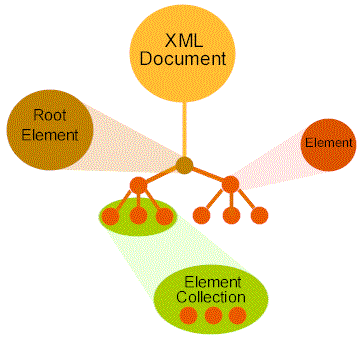

Microsoft Corporation
January 7, 1998
Contents
Introduction
XML Document Properties and Methods
XML Element Properties and Methods
Element Collection Properties and Methods
Sample JScript Program
The XML object model in Microsoft® Internet Explorer 4.0 provides a means by which you can navigate and manipulate an XML document. An XML document is a tree-like structure, starting with the top-level element (its root) and branching out to its descendants. Being able to navigate this tree enables you to retrieve important information concerning the source document.
This document explains how to access the XML object model from script in Internet Explorer 4.0. Information on the DOM interfaces can be found at XML DOM Reference. At the end of this document, you'll find an example of a JScript program that uses the XML object model to display an XML document in a Web page.
In accessing the XML object model, three objects are used:
the XML Document,
the XML Element, and
the Element Collection.

Figure 1. Accessing the XML object model
The XML Document is an object representing an XML source document. That Document consists of a root element (the top-level element) and its descendants (the other elements). An Element Collection is a group of sibling elements.
You create an XML document object by creating a new ActiveXObject:
var xml = new ActiveXObject("msxml");
The above code assigns the XML Document object to the variable xml.
Once you have created an XML Document object, you can access information concerning the object and manipulate the object by calling the following properties and methods. In the examples, xml is the document created above.
 Back to top
Back to top
URL
- Description:
- Returns the URL associated with the document.
- Prototype:
- xml.URL
- Example:
xml.URL = "http://Chein/_private/pdcxml.xml";
- Note:
- You can also use URL to load a new document based on another URL. The current document is destroyed and the new document is loaded in its place:
xml.URL = "http://Chein1/_private/newXML.xml";
root
- Description:
- Returns the root element of the document.
- Prototype:
- xml.root
- Example:
var docroot = xml.root;
charset
- Description:
- Returns a string that specifies the character set of the input document according to ISO standards.
- Prototype:
- xml.charset
- Note:
- You can also assign a character set for the XML document.
version
- Description:
- Returns the version of the XML specification being used.
- Prototype:
- xml.version
doctype
- Description:
- Returns the content specified in the !DOCTYPE element.
- Prototype:
- xml.doctype
- Description:
- Creates a new element that can then be added as a child to another element in the tree. The first argument in the example below references
the element type. A list of types and corresponding number references is provided in the explanation of the type method call.
- Prototype:
- xml.createElement(elementType, newTagName)
- Example:
var newElem = xml.createElement(0, "NEW-DESCRIPTION");
fileSize
- Description:
- Returns the file size of the XML document.
- Prototype:
- xml.fileSize
- Note:
- This property is documented in the C++ documentation, but has yet to be implemented.
fileModifiedDate
- Description:
- Returns the date when the file was last modified.
- Prototype:
- xml.fileModifiedDate
- Note:
- This property is documented in the C++ documentation, but has yet to be implemented.
fileUpdatedDate
- Description:
- Returns the date when the file was last updated.
- Prototype:
- xml.fileUpdatedDate
- Note:
- This property is documented in the C++ documentation, but has yet to be implemented.
mimeType
- Description:
- Returns the MIME (Multipurpose Internet Mail Extension) type. MIME is a set of enhancements to SMTP allowing an Internet message to include a mixture of audio, image, video, and text components and to accommodate a variety of international character sets. MIME messages are identified by a MIME header in the top level of the STMP header. The MIME mechanisms are specified in the RFC 1341 document.
- Prototype:
- xml.mimeType
- Note:
- This property is documented in the C++ documentation, but has yet to be implemented.
With access to these properties and methods, you can now specify the XML data file to be loaded by the XML Document object:
xml.URL = "http://Chein1/_private/pdcxml.xml7";
Likewise, using root you can now identify the document root of the XML document pointed to by the URL specified above:
var docRoot = xml.root
Having located the document root, it becomes easy to navigate the tree. The following properties and methods allow you access to the document root and all of its children. In the examples, elem represents an XML Element object.
Back to top
type
- Description:
- Returns the element type of the requested element:
0 - ELEMENT
1 - TEXT
2 - COMMENT
3 - DOCUMENT
4 - DTD
For Internet Explorer 4.0, the interesting element types are ELEMENT, TEXT, and COMMENT. In the JScript program at the end of this document, elem.type is used to differentiate between tag names and text.
- Prototype:
- elem.type
- Example:
if (elem.type == 0)
return "ELEMENT";
tagName
- Description:
- Returns the name of the tag as a string. The name is always in uppercase. The name of a comment element is returned as "!". The other META tags have names that correspond to the special character followed by the META tag name. For instance, the name of <?XML...> is "?XML".
- Prototype:
- elem.tagName
- Example:
if (elem.type == 0) //if it is a tag
return elem.tagName; //return the tag name as a string
- Note:
- It is also possible to change a tag name by assigning a value to that property:
if (elem.tagName == "PAINTING") //if a element
elem.tagName = "OIL-PAINTING"; //change its tag name to "OIL-PAINTING"
text
- Description:
- Returns the content of text and comment elements. The content of a text element is the text between the tags. All mark-up between the tags is stripped. For instance, the contents of the following element, <TITLE>Review of <MOVIE>Titanic</MOVIE></TITLE>, would be "Review of Titanic". The content of a comment is the comment. For example, the following element, <! This is a comment/>, has the name "!" and the content "This is a comment".
- Prototype:
- elem.text
- Example:
if (elem.type == 1) //if the node is a text node
return elem.text;
- Note:
- It is also possible to add to or change the text of an element by assigning a value to the text property:
if (elem.type == 1)
elem.text = "This is an element"; //replaces the text of the element
//with the string "This is an element"
- Description:
- Allows for the addition of children elements. The Element object passed to addChild is the element that is to become the new child. The index argument refers to the new element's relative position among its new siblings. "-1" must always be the final argument. All the children and descendants of this new child element remain attached as before. Any element can have only one parent element, so the previous parent will lose this child from its subtree. Note that it is possible to use this method to break off a subtree from one XML document and attach it to another XML document. However, there are some stringent restrictions on when this can be done:
-
There can be no outstanding references on collections on the child element or any of its descendants.
-
There can be no reference on any of the descendant elements of the child.
If these restrictions are not adhered to, an error will be returned. Finally, the implementation of breaking off a node that has many children and attaching it to a tree of another document is somewhat more expensive than breaking off a node and attaching it to another node of the same document.
- Prototype:
- elem.addChild(elementObject, index, -1)
- Example:
if (elem.children.item(0) != null) //if the element has at least one child
elem.addChild(elem.children.item(0).children.item(0),
0, -1); //add a descendant as a child
removeChild()
- Description:
- Allows for the removal of children elements. The element remains in memory and can be reattached to a tree by using addChild. All the children and descendants of this child element remain attached as before. It is possible to use this method to break off a subtree from one XML document and attach it to another XML document. However, there are restrictions, as explained in addChild.
- Prototype:
- elem.removeChild(childElement)
- Example:
if (elem.children.item(0).length > 1) //if the element has more than one child
elem.removeChild(elem.children.item(1)); //remove the second child element
parent
- Description:
- Returns the immediate ancestor of the requested element. Every element in the tree, except the document root, has a parent.
- Prototype:
- elem.parent
- Example:
if (elem != xml.root) //if the element is not the root element
return elem.parent.tagName;
- Description:
- Returns the value of the specified attribute of the requested element. This value will always be returned as a string.
- Prototype:
- elem.getAttribute(attributeName)
- Example:
if (elem.getAttribute("font-style") == "italic")
return "italic";
- Description:
- Allows for the setting of an attribute. The attribute's name and its new value are provided. The previous value of this attribute is lost. A private copy of the input value is made. The attribute value is always stored as a string. Therefore, the new attribute value should be passed as a string.
- Prototype:
- elem.setAttribute(attributeName, attributeValue)
- Example:
if (elem.getAttribute("font-style") == "italic")
elem.setAttribute("font-style","normal");
- Description:
- Allows for the removal of an attribute.
- Prototype:
- elem.removeAttribute(attributeName)
- Example:
if (elem.getAttribute("font-style") == "italic")
elem.removeAttribute("font-style");
children
- Description:
- Returns an enumeration of children elements of the requested element. The collection allows the application to make queries about the size of the collection as well as enumerate through the children or access any of them by index. If no children exist, elem.children returns null.
- Prototype:
- elem.children
- Example:
if (elem.children != null) // if the element has children
return "yes";
The children of an element are manipulated as Element Collection objects. You can access the members of a collection by index and by tag name. If children are accessed by tag name and two or more children share that name, a specialized collection is created. The members of such a specialized collection can be accessed by index, just like the members of a general collection.
The item() method can be called to access and manipulate members of an Element Collection. The length property can be accessed to retrieve information concerning the length of an Element Collection.
Back to top
- Description:
- Returns the requested item or items from a collection. This method is fairly involved and can be used in different ways to retrieve members of a collection. If you specify solely an index, such as "0", the item at that index is returned. If you specify solely an element name, such as "TITLE", a collection of all elements with that specific name is returned. Note, if only one element of that name exists, it is returned as an XML element, not as a collection. If both an element name and an index are specified, the index number refers to the collection of elements of the specified name. In such a case, an element is returned.
- Prototype:
- elem.children.item(index)
elem.children.item(elementName)
elem.children.item(elementName, index)
- Example:
return elem.children.item(0).text; //return the text of the first child element
return elem.children.item("TITLE") //return a collection of <TITLE> elements
return elem.children.item("TITLE",3).text //return the text of the fourth <TITLE> element
length
- Description:
- Returns the length of a collection.
- Prototype:
- elem.children.length
- Example:
for (i = 0; i < elem.children.length; i++)
output_doc(elem.children.item(i),(indents + 1));
Back to top
Sample JScript Program
Let's now take a look at a JScript program that uses the object model to reveal the contents of an XML document.
The script first creates an ActiveXObject representing an XML document and then passes the root of that document to output_doc(). This function then inserts the root element's tag name and contents into the HTML element with an ID value of "results," repeating the process for each element within the source document. The program results in the XML document being displayed in the HTML page.
Note: The inability to enumerate attributes precludes the display of any attributes an element in the source document might have.
<SCRIPT LANGUAGE="JScript" FOR=window EVENT=onload>
var indent_array = new String(" ");
var str = "";
var xml = new ActiveXObject("msxml");
xml.URL = "http://Chein/_private/pdcxml.xml";
var docroot = xml.root;
output_doc(docroot,0);
function output_doc(elem,indents)
{
var i;
if (elem.type == 0) // 0 is a tagName
{
document.all("results").insertAdjacentText("BeforeEnd",
indent_array.substring(0,(4 * indents)) +
"<" + elem.tagName + ">" + "\n");
if (elem.children != null)
{
for (i = 0 ; i < elem.children.length ; i++)
output_doc(elem.children.item(i),(indents + 1));
}
document.all("results").insertAdjacentText("BeforeEnd",
indent_array.substring(0,(4 * indents)) +
"</" + elem.tagName + ">" + "\n");
}
else if (elem.type == 1) // 1 is a text node
{
document.all("results").insertAdjacentText("BeforeEnd",
indent_array.substring(0,(4 * indents)) +
"\"" + elem.text + "\"\n");
}
else
alert("unknown element type: " + elem.type);
}
</script>
As you can see from the above script, the XML object model in Internet Explorer 4.0 makes it quite easy to write an application that can traverse an XML document.